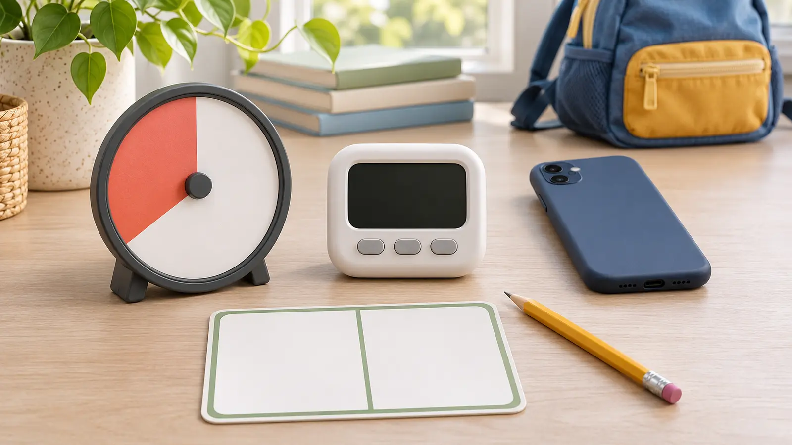

Analog visual disk
Fits: a child who benefits from seeing a colored area shrink without reading numbers. Tradeoff: size, mechanical noise, limited precision and a display that may be hard to see across a room.
SCHOOL-NIGHT SYSTEM · COMMERCIAL · AUTHORITY-EXPANSION
A timer cannot make a bad boundary fair, and a louder alarm is not a better transition. Pick one visible countdown, let the child help set it, state what happens next, and keep the adult responsible for the plan.

Commercial disclosure: this guide includes three Amazon Associate category links added through Mr Adventure Dad’s approved affiliate system. The site may earn from qualifying purchases at no added cost to you. No timer was hands-on tested; links do not prove accuracy, durability, volume, accessibility, battery life, app privacy, availability, price, rating or warranty.
Name one repeatable friction point: leave for school, end screen time, start homework, get into the shower, pack for practice or reset the living room. Write the end action in six words or fewer. “Shoes on at zero” is usable. “Be responsible” is not.
The American Academy of Pediatrics’ HealthyChildren.org guidance says consistent, predictable media routines and built-in timers can help younger children transition away when time is up. Its screen-meltdown guidance also emphasizes a shared plan, child voice and reconnecting after conflict. That is support for a predictable tool, not proof that a specific timer fixes behavior.
Use the 20-minute family calendar reset to decide which transitions deserve structure. Do not put a timer on every moment of a child’s day.
Choose an analog disk when visible remaining time is the missing information and the child does not need exact seconds. Compare total size, viewing angle, duration range, controls, alarm options, batteries, mounting and replacement route. Choose digital when precision, portability or repeated short intervals matter. Compare display size, control lock, sound choices, memory, battery access and manual.
Choose an app or existing device when the adult can keep the display visible without opening a distraction loop. Use built-in tools before installing a new app. Choose no timer when countdowns increase worry, the task duration is unpredictable, or the family really needs a clearer next-action card.
The three paid links below are category searches, not rankings. Verify the exact product manual, warnings, battery compartment, controls, return terms and current recall status. No pictured object is an affiliate product.
Use the same four lines: “We have ten minutes.” “When the timer ends, shoes go on.” “Do you want to press start?” “The timer ended; shoes now.” The adult does not threaten, add surprise minutes, or blame the timer. If the transition repeatedly fails, change the demand, duration, cue, environment or support. Do not keep buying louder devices.
For an after-school reset, pair the timer with the 30-minute nature walk plan or the 45-minute library night. For a tiny equipment routine, the coat-pocket reset already has a natural finish and may not need a timer.
Child is already flooded: do not introduce a new countdown mid-crisis. Reduce language, make the area safe and reconnect. Alarm causes panic: silence it and use a visual or adult cue. Timer fails: adult owns the transition; use clock time and the written next step. Routine is late: shorten the activity honestly instead of setting a fake timer that everyone knows will be ignored.
Skip a purchase when the existing phone or clock works, the child cannot interpret the display, countdowns increase distress, the alarm will disturb others, the battery compartment is unsafe for the household, an app requires unacceptable data access, or the adult is using the device to avoid a necessary conversation. A qualified clinician or educator should guide supports tied to an individual diagnosis or formal plan.
Reviewed November 6, 2026 using the American Academy of Pediatrics’ HealthyChildren.org guidance on predictable media routines and built-in timers and screen-time transitions and shared plans, plus the U.S. Consumer Product Safety Commission’s button-cell and coin-battery safety center and recall search. The seven-day test, decision card and four-line script are independent editorial tools—not medical, behavioral, special-education or product advice.
MAKE THE WEEK COUNT
Build the plan your family can finish well, then leave enough energy for the next part of the day.
More family plansTHE USEFUL STUFF
These are practical categories to compare—not a reason to overpack. Check fit, specifications and current reviews before buying.
Paid links: As an Amazon Associate I earn from qualifying purchases. You pay no additional cost.
Compare total size, viewing angle, duration range, control simplicity, alarm options, batteries and mounting. A colored disk is useful only when the child can see and understand it.
See current options → COMPARE ON AMAZONCheck display size, button lock, alarm and silent modes, memory, battery compartment, manual and accidental-reset behavior in the actual room.
See current options → COMPARE ON AMAZONVerify the exact display, vibration and sound controls, clip or stand security, charging or battery access, privacy, manual and return terms. Portability does not prove accessibility.
See current options →